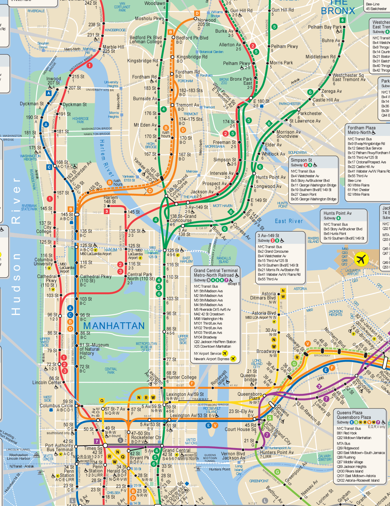

2
GRAND CENTRAL - 42 St
● ● ○ ○ ○ ○

The NYC Subway runs 24/7 across 472 stations on 25 routes with 665 miles of track. Before heading out, use the MTA app or Google Maps to plan your journey. Express trains skip stations, so check if you need local or express service.

The MTA app shows real-time arrivals